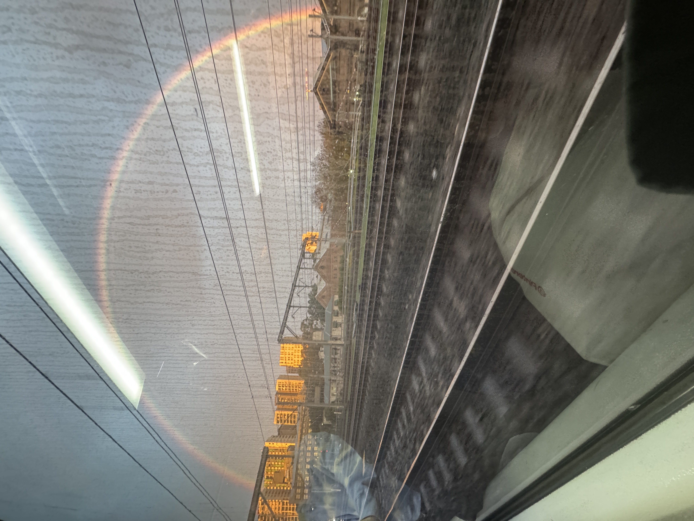
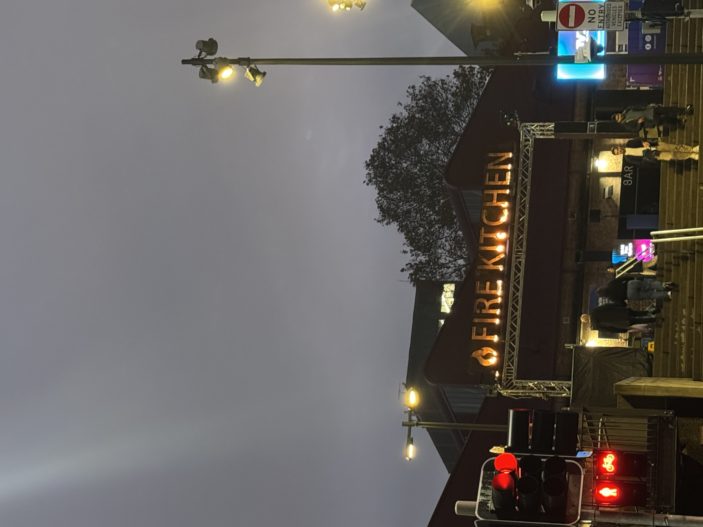
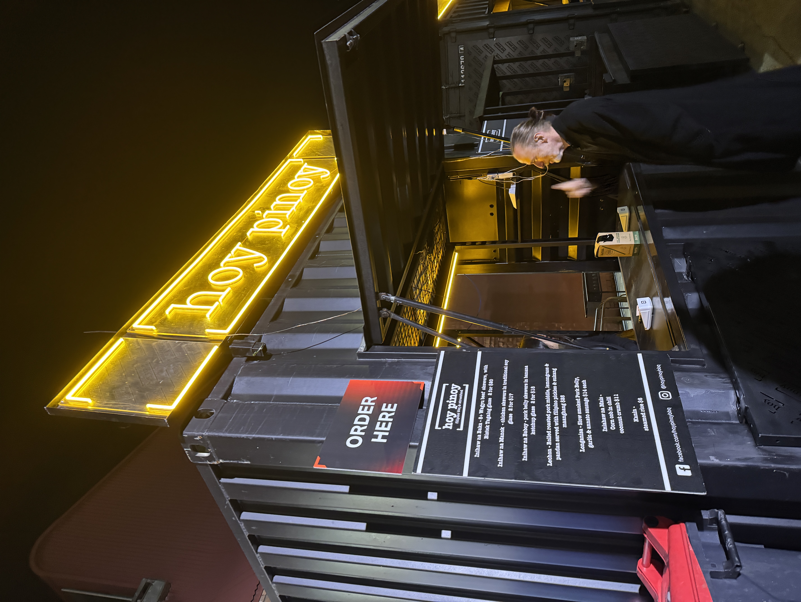
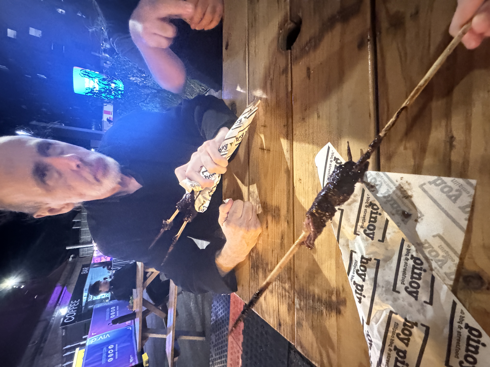

I’m still writing! I thought I’ll stop by the third one honestly. I guess I just really needed an avenue to express my thoughts my feelings. Even though I’m fairly sure no one’s reading this at the moment, but I hope someone will appreciate these texts (still aiming to diversify what I write someday instead of writing what’s in my head).
My writing is very messy. Some typos here and there to. I guess I just do things without thinking, really. I remember when my mentor picked me up from the airport, I told him how hard it is to start a business and do these freelance thing. I told him my perfectionism just eats up so much of my time and motivation so much that I end up doing nothing. “Perfectionism is the enemy of progress,” he said. Somehow, I knew that but it struck me at that moment. His business, his website, and how it works is very simple - it’s not perfect. But it’s making him enough to live in Australia comfortably with a family. I guess it’s just that. We think too much that we end up not doing. I get that feeling too when I’m cooking or playing the guitar. From there, I just do. I follow my heart in everything I do. I still do think a lot sometimes, but when it comes to making tough decisions; it’s my heart which takes the wheel. I do things that my heart says. It doesn’t have to be perfect. So what if I make some grammar or typographical errors here. It’s me. I’m sure I’ll get better writing and expressing myself the more I do this.
Other than that, it’s getting frustrating transferring content from Notion into HTML. I really made life hard for myself. But I quite like this setup of having my own site I coded honestly. It just feels very - authentic. It’s like an invitation to my mind. So I guess it’s worth the additional hassle.
To continue from the last prompt, yesterday was the start of the Vivid Festival here in Sydney. It was one of the most amazing and eye-opening day I had in Sydney and affirmed some of the stuff which bought me here in the first place. No, it’s not because of the festival. I honestly didn’t look at any exhibits at that time. I was with a group of really passionate people who are looking or have built something for themselves. Let me recount what happened.
It had been raining hard and continuously in Sydney over the week. So much that the Trains are fucked again because of flooding in some areas. I had an event in the University Technology of Sydney Startups just by Sydney Central. I thought I wouldn’t make it, but I did - albeit 30 minutes late.
The rain stopped finally while I was going there. On the train, we were stopped right before Redfern Station. It was 5 PM and it was the first proper sunset in Sydney after days of raining. During that time, something beautiful was in the sky - the most perfect rainbow I’ve probably seen.

What’s striking about this rainbow was how vibrant and intense its colors were. It’s also made full-arch with great detail between each band. I usually don’t believe in signs (refer to my prompt on stars), but like I said there, sometimes things just happen as if you’re being told something. I really believe that I’m here for a reason - it’s why I lived for this long. That, or maybe a rainbow during sunset to greet you after days of rain is just something to be poetic about.
Last November 2024, I started working on a business idea. It was a fun project at start as I get to test out some business marketing knowledge I’ve learned and know more about how to start a startup. I never really expected much of it, but I did get some traction. I got people interested from all around the world like in the United Kingdom, Peru, Germany, Poland, and others. I talk about the idea in passing whenever I attend events. People really liked the idea. When I’m talking about it to my target audience, they become very interested and see potential in it.
But as all startup journey goes, you get stuck. I only had an idea - but I didn’t have a product. My next challenge was to find a co-founder who will be just as passionate as my vision who also has the technical expertise to build the software.
Two weeks ago, I think I found someone.
He’s younger than me and a fairly new graduate from the University of Sydney. He’s really passionate about building something himself. He does his own drop-shipping business and launching some sort of electric floss brand with some co-founders. I talked to him about the idea. He really liked it and was very interested in seeing how he can help. I met him a couple of times after that - we just talked about how he’s marketing his drop-shipping business, and the technical side of my idea. He’s very nice and really smart. One night, we were walking to Maccas just by Central Station and we talked about AI, philosophy, politics, and where the world was heading. It was crazy! I’ll talk more about this in a bit.
Anyway, he tried to build the product with the help of Artificial Intelligence and he saw that he’s going somewhere. He reckons he can build at least a Minimum Viable Product (MVP) by a week with AI. Anyway, we’ll talk more about what he’s building and the vision tomorrow. I guess my point in this part is that the fun little business idea I had may go somewhere. But I don’t want to bet all my cards on that one yet.
We met again last Friday (23 May) during the start of the Vivid Festival for another event at UTS Startups. The event was pretty standard honestly - there was too many people and I really hate having to shout while talking to someone. But things got really interested as the event ended.
Me and Luke (my potential co-founder) was just waiting to talk to this one guy who owns a big startup. There’s this older guy named Sean (I like to call him Paddy because he kind of looks like Paddy Considine from HBO’s House of the Dragon and Edgar Wright’s Hot Fuzz.) who approached us. I actually met him two weeks ago, but things got more interesting in this conversation.
Basically, when I said that my talk two weeks ago with Luke was crazy? Add Sean to this and that conversation will multiply to a hundred!
Sean was a highly experienced and smart bloke. The reason why I really liked him is that he’s some sort of Data Visualization Scientist. Looking at his profile, apparently he’s a professor at the School of Biotechnology and Biomolecular Science in the University of New South Wales. He finished his education at the University of Sydney almost 40 years ago. He lived in Germany for almost 20 years. His story got really interesting there! He worked for this bio-startup unicorn that, at its highest, valued at over a million dollars. When the human genome was first fully sequenced, they were the first company to analyze that DNA Sequence to make sense out of the data. Numerous scientist from all over the world were scrambling to pay them as much as they want to use their platform. Unfortunately, things kind of went under for that business. But Sean’s career since then had been much more interesting.
Like I said, he’s more concerned with Data Visualization. If you’re a biology student, most likely you will have encountered those fancy 3D molecular animations which give you a better understanding how protein works, for example. Probably the most basic mechanism I can think of is DNA polymerization. It’s a very intricate process which involves a series of proteins working together. He basically specializes in making sense of biological data and producing visual content that helps people understand that data better. He talks a lot about this sort of visual conference in the United Kingdom called VIZBI. Nevertheless, I was highly interested with what he was doing. I’ll talk more about what I told him in a bit.
Anyway, Sean said hi to me and Luke. We were just talking about normal business stuff at first, but somehow we fell on a rabbit hole. We started talking about freewill, quantum mechanics, and all other deep philosophical stuff.
I used to believe that everything in our life is pre-determined - that we don’t necessarily have freewill. From the moment we are born, our life will have already been laid out right in front of us and it’s just up to ours and others’ neurological processes to take the appropriate pathways to induce the inevitable fate we will have.
We basically argued about how this is not really the case. The most fundamental laws of nature is unpredictable. You cannot exactly predict everything with our current scientific capacity. This is where quantum mechanics come in. How can particles react differently from time-to-time? How can a particle just exist in and out of existence in just a blink of an eye? Why can’t we determine the exact location of an electron and why is it only denoted as a probability cloud? Somehow, that just made sense to me. And we were basically sent into this whirlwind of existential crises and whatnot. It’s hard to articulate exactly everything we’ve talked about - I’m not as smart as Sean is, but the conversation went on the night.

After the event, Vivid was already happening. Right outside was this old tram tracks that has been converted into a pedestrian space. For Vivid, that space turns into this thing that they call the “Fire Kitchen.” Basically it’s a collection of “fire”-themed food stalls and exhibits. Every minute or so, fire machines would spew fire across the whole street which is sort of nice to have during the cold winter nights.
We looked for a place to sit and talk. Sean and I were talking about languages. I pointed-out how heavily european influenced the Tagalog language is. Kumusta? for instance is Como Estas? in Spanish and Come Stai? in Italian. At one point, he was talking straight German to me. It’s weird. It’s like English words with a funny german accent. It was fascinating nevertheless.

There was a Filipino BBQ stall which Sean wanted to try. How they cook it is sort of the similar style to street BBQs found in the Philippines. We opted to try out the BBQ Wagyu Beef Skewers which was honestly very pricey ($20 just for two skewers). Nevertheless, we tried it and Sean liked it thankfully.

It’s literally seasoned with the standard Filipino Pork BBQ but on a Wagyu Beef Skewer. It was honestly really delicious or maybe it’s just my natural bias to steak. I wouldn’t say it’s worth $20 though, but I guess it being Wagyu sort of justifies it.
Shortly before that, I talked to Sean about my background in Biology and how sometimes I get really conflicted with the career path I chose. I loved learning Biology but I’m cursed to pursue a more business-oriented path. Sean was very keen and really liked what I’ve done I guess. He said he’ll be in-contact again soon as he has this sort of internship thing he’s doing with another girl whom we met two weeks ago. I was very eager too and I hope he will contact again soon.
Anyway, there was four of us on the table now. The other guy sort of joined-in. Our discussions weren’t philosophical anymore. It’s more about people. Who we work with and choosing the right people we surround ourselves with.
Anyhow that conversation really opened my eyes. Just last week, I found myself on a though decision: do I go home or do I stay here? I’ve gotten to the point where I really considered doing so because I wanted to least know what it means to live a stable life. Living here in Sydney and doing everything myself for almost two and half years now mentally ruined me at some point. I just wanted to at least live for a period of time where I wasn’t worrying about the future.
The decision was literally killing me and I was begging for a sign. Thankfully, the signs did pop up as the week ended. I’m settled - I’m staying here. The people I met on that day, the journey I’m going through, and the opportunities which await me is here. I love almost everyone I met here. I have been met with a lot of kindness and like-minded people whom I never would have thought of meeting, nor will I ever do if I was home. It was just at that moment - It’s really fascinating sharing a table and talking about all sorts of stuff with someone with probably 40-years of experience, someone who’s younger than me starting his own business, and another guy who was just as passionate. I guess somewhere or something was telling me - I’m home.
I realized that what awaits me home is just more pain and suffering - much like the first 23 years of my life has been. Why would I return just to hurt myself more?
Hopefully things will work out.